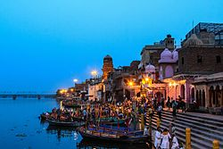
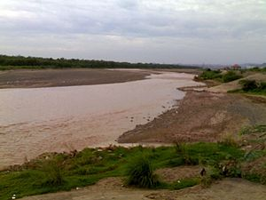

विषय :- हरयाणा के बारे मे
हरयाणा के जिले और उनके नाम
हरयाणा मे २२ जिले है
| अंबाला |
| गुरगाओं |
| कुरुकशेत्र |
| पंचकुला |
| यमुना नगर |
| फ़रीदाबाद |
| पलवल |
| नूह |
| महेन्द्रगढ़ |
| रिवरी |
| फ़तेहाबाद |
| जिंद |
| हिसर |
| सिरसा |
| झज्जर |
| चरखी दादरी |
| रोहतक |
| सोनीपत |
| भिवानी |
| कर्नल |
| पनिपट |
| कैथल |
हरियाणा की भाषएं
कई क्षेत्रीय भाषाओं या बोलियों, जिन्हें अक्सर हिंदी में कहा जाता है,राज्य में बोली जाती हैं।
उनमें से प्रमुख है हरियाणवी (जिसे बंगरू के नाम से भी जाना जाता है), जिसका क्षेत्र हरियाणा के
मध्य और पूर्वी भागों को समाहित करता है।पूर्वोत्तर में हिंदुस्तानी, पश्चिम में बागड़ी और दक्षिण में
अहिरवती, मेवाती और ब्रजभाषा बोली जाती है।
हरयाणा के लोक रंगमंच और नृत्य
हरियाणा के लोक संगीत और नृत्य मुख्य रूप से हरियाणवी जनजातियों के
कृषि और मार्शल नृत्यों की सांस्कृतिक जरूरतों को पूराकरने पर आधारित हैं।
हरियाणवी संगीत लोक रंगमंच मुख्य प्रकार सांग, रासा लीला और रागिनी हैं।
रंगमंच के सांग और रागिनी रूप को लख्मी चंद ने लोकप्रिय बनाया।
हरयाणा के मैदान और पहाड़
हरियाणा में चार मुख्य भौगोलिक विशेषताएं हैं।
यमुना-घग्गर मैदान को राज्य का सबसे बड़ा हिस्सा बनाने के लिए दिल्ली डब भी कहा जाता है जिसमें सतलज-घग्गर दोआब (पंजाब में
उत्तर में सतलज और उत्तरी हरियाणा से बहने वाली घग्गर नदी), घग्गर-हकरा दोआब (घग्गर नदी और हकरा के बीच) द्रिशवती नदी जो
पवित्र सरस्वती नदी की पैलियोचैनल है) और हकरा-यमुना दोआब (हाकरा नदी और यमुना के बीच)। यह भी देखें: दोआब
हिमालय की तलहटी में उत्तर-पूर्व में निचला शिवालिक हिल्स
बगर पथ अर्ध-रेगिस्तान सूखा रेतीला मैदान दक्षिण-पश्चिम में है। इन्हें भी देखें: बांगर और खादिर
अरावली रेंज की सबसे उत्तरी कम वृद्धि ने दक्षिण में गैर-निरंतर बहिर्वाह को अलग कर दिया

यमुना नदी

घक्कर नदी
हरियाणा के बहुत से लेखकों ने राष्ट्रीय और अंतरराष्ट्रीय स्तर पर अपनी
पहचान बनाई है| इनमें से प्रमुख लेखकों और उनकी
कृतियों को सूची नीचे दी जा रही है-
1. विशम्भर नाथ कौशिक- मणिमाला, गल्प मंदिर, पेरिस की नर्तकी, प्रेम प्रतिमा,
कल्लोल (लघुकथा संग्रह) और माँ तथा भिखारिन (उपन्यास)
2. बाबू बालमुकुन्द गुप्त- शिवशम्भू का चिट्ठा, चिट्ठे और ख़त
3. शिवनारायण शास्त्री- छात्र बोधिनी और स्त्री कर्तव्य शिक्षा
4. छज्जू राम- पाणिनीय हिंदी व्याकरण और कुरुक्षेत्र महात्म्य
5. श्रीराम शर्मा- हरियाणा के स्वतंत्रता सेनानी, हरियाणा का इतिहास और हरियाणा के नौ रत्न |
6. भदन्त आनंद कोशल्यायन- भिक्षु के पत्र और बहादुर अनुचर आदि
7. विष्णु प्रभाकर- ढलती रात, स्वप्नमयी, अर्धनारीश्वर, हत्या के बाद, नव प्रभात, डॉक्टर,
प्रकाश और परछाइयाँ, संघर्ष के बाद, धरती अब भी धूम रही है, मेरा वतन, खिलोने, आवारा मसीहा
प्रस्तुतकर्ताओं
<15> युनस
साई सृजन
पी.अजय कुमार
साई गोकुल
सुशांत प्रसाद
शिवतेज
साई कृष्ण